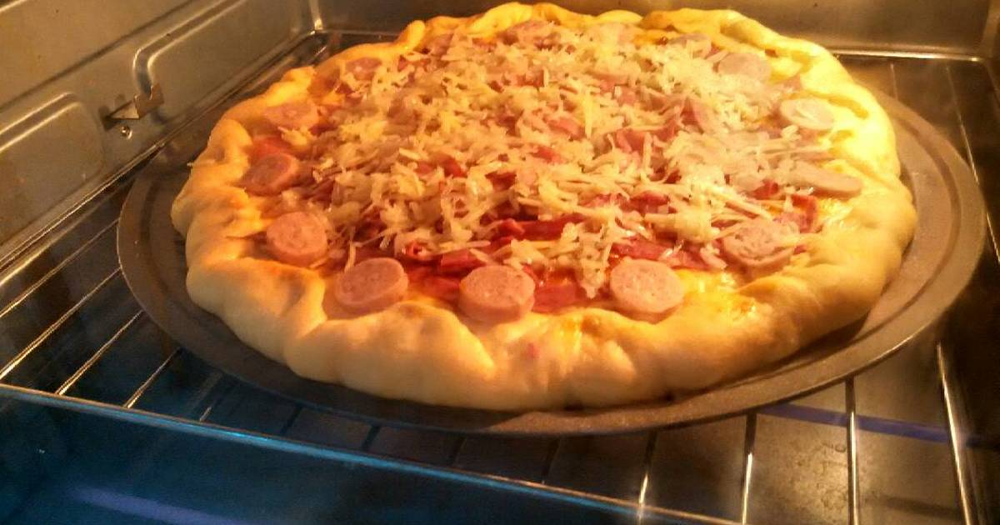

Sekarang bikin pizza g begitu males lagi setelah nemu resep adonan roti yg tanpa ulen. Biarkan ragi yang bekerja ☺. Untuk adonan ini bisa jd 2 loyang uk 22 cm. Sausnyapun tdk repot bikin hanya campuran saus botolan. No ribet yaa..
Bahan-bahan untuk membuat Pizza Sosis Jumbo (Tanpa Ulen):
- -Aktifkan ragi
- -150 ml air hangat suam kuku. Jgn panas nnt raginya mati
- -1 sendok teh ragi instan
- -1 sendok teh gula pasir
- -200 gram terigu protein tinggi
- -25 gram susu bubuk
- -2 sendok teh gula pasir
- -Sejumput garam
- -3 sdm minyak zaitun/minyak sayur
sesuai selera Topping:
- Ayam
- Sosis
- Daging
- Smoked Beef
- Paprika
- Jagung
- Bawang Bombay
- Saus: napoletan/bolognise/saus tomat+sambal
- Secukupnya keju mozarella dan parmesan (quick melt juga bisa)
Langkah-langkah:
- 1.Aktifkan ragi. Campur semua bahan. Diamkan 5-10 menit hingga berbusa. Jika tdk berbusa ulangi tahap ini tanda raginya mati.
- 2.Tuang 2 sdt sisa gula pasir dan minyak zaitun ke dalam larutan ragi. Aduk rata.
- 3.Dalam wadah lain campur terigu dan susu bubuk serta garam. Aduk rata.
- 4.Tuang larutan ragi ke dalam campuran tepung. Aduk rata. Ini jenis dough yg tidak lengket.
- 5.Bulatkan adonan. Tutup plastik wrap. Diamkan hingga mengembang. Tergantung cuaca ya. 30-60 menit.
- 6.Tinju adonan. Bentuk bulat.
- 7.Tata di loyang yg sudah di oles minyak. Tusuk2 dengan garpu. Saya pakai loyang pizza jumbo 33cm. Mungkin kalo pakai loyang yg 20 cm bisa jadi 2 loyang.
- 8.Oles dengan bahan saus dan beri topping.
- 9.Panggang hingga matang. Kalau saya doughnya di panggang dulu 5 menit. Keluarkan. Lalu oles dan beri topping. Panggang lagi hingga matang. Sesuai selera masing2 aja ya.